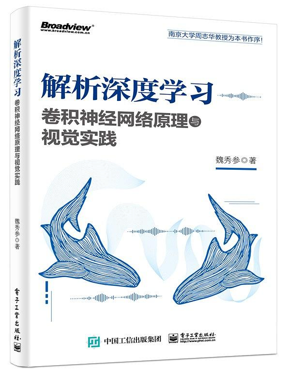

CV 学习资源
这里记录了为我提供了非常多帮助的学习资源。
公开课
Coursera
- https://www.coursera.org/learn/machine-learning
- https://www.coursera.org/specializations/deep-learning
吴恩达的机器学习和深度学习的课程是大部分人的入门课程，当然也是我的入门课程。
如果在机器学习和深度学习方面，你是零基础或者基础十分薄弱的，那么推荐你学习这门课程，并完成里面的代码和作业任务。当你学完这门课就具有了一定的基础，可能会在更细致的领域进行研究，比如计算机视觉或者自然语言处理。
CS231n
如果你感兴趣的领域是计算机视觉，那么斯坦福大学的 CS231n 课程是不能错过的，这是我的计算机视觉入门课程，我第一次从这里学会并理解卷积的基本概念。
机器学习和深度学习的语言以 Python 为主，如果需要入门和练习 Python，这个课程中也提供了非常优秀的学习资源。
@爱可可-爱生活
@爱可可-爱生活 是北京邮电大学的老师的微博账户，每天会发布最新的论文和 GitHub 优秀项目等，可以通过它关注机器学习领域最新研究成果。
同时，它的哔哩哔哩账号 fly51fly 下收录了非常多的优秀公开课，比如斯坦福 2019 最新的自然语言理解课程。当你对知识感到饥渴时就可以来这里充电。
网站
paperswithcode
这个网站总结了当前有开源代码的论文，以及它们在各项竞赛上的表现。
比如这个页面可以查看 ImageNet 上最好的模型排名：https://paperswithcode.com/sota/image-classification-on-imagenet
书籍
机器学习
机器学习是计算机科学与人工智能的重要分支领域. 本书作为该领域的入门教材，在内容上尽可能涵盖机器学习基础知识的各方面。 为了使尽可能多的读者通过本书对机器学习有所了解, 作者试图尽可能少地使用数学知识. 然而, 少量的概率、统计、代数、优化、逻辑知识似乎不可避免. 因此, 本书更适合大学三年级以上的理工科本科生和研究生, 以及具有类似背景的对机器学 习感兴趣的人士. 为方便读者, 本书附录给出了一些相关数学基础知识简介.
全书共16 章，大致分为3 个部分：第1 部分（第1～3 章）介绍机器学习的基础知识；第2 部分（第4～10 章）讨论一些经典而常用的机器学习方法（决策树、神经网络、支持向量机、贝叶斯分类器、集成学习、聚类、降维与度量学习）；第3 部分（第11～16 章）为进阶知识，内容涉及特征选择与稀疏学习、计算学习理论、半监督学习、概率图模型、规则学习以及强化学习等.前3章之外的后续各章均相对独立, 读者可根据自己的兴趣和时间情况选择使用. 根据课时情况, 一个学期的本科生课程可考虑讲授前9章或前10章; 研究生课程则不妨使用全书.
书中除第1章外, 每章都给出了十道习题. 有的习题是帮助读者巩固本章学习, 有的是为了引导读者扩展相关知识. 一学期的一般课程可使用这些习题, 再辅以两到三个针对具体数据集的大作业. 带星号的习题则有相当难度, 有些并无现成答案, 谨供富有进取心的读者启发思考.
本书可作为高等院校计算机、自动化及相关专业的本科生或研究生教材，也可供对机器学习感兴趣的研究人员和工程技术人员阅读参考。
此书是我入门机器学习的时候认真看过的，对我的帮助很大，建议大家仔细阅读。
解析深度学习：卷积神经网络原理与视觉实践

深度学习，特别是深度卷积神经网络是人工智能的重要分支领域，卷积神经网络技术也被广泛应用于各种现实场景，在许多问题上都取得了超越人类智能的结果。本书作为该领域的入门书籍，在内容上涵盖深度卷积神经网络的基础知识和实践应用两大方面。《解析深度学习：卷积神经网络原理与视觉实践》共14 章，分为三个部分：第一部分为绪论；第二部分 （第1～4 章）介绍卷积神经网络的基础知识、基本部件、经典结构和模型压缩等基础理论内容；第三部分（第5～14 章）介绍深度卷积神经网络自数据准备开始，到模型参数初始化、不同网络部件的选择、网络配置、网络模型训练、不平衡数据处理，最终到模型集成等实践应用技巧和经验。《解析深度学习：卷积神经网络原理与视觉实践》并不是一本编程类书籍，而是希望通过“基础知识”和“实践技巧”两方面使读者从更高维度了解、掌握并成功构建针对自身应用问题的深度卷积神经网络。
《解析深度学习：卷积神经网络原理与视觉实践》可作为深度学习和卷积神经网络爱好者的入门书籍，也可供没有机器学习背景但希望能快速掌握该方面知识并将其应用于实际问题的各行从业者阅读参考。
开源电子版：http://lamda.nju.edu.cn/weixs/book/CNN_book.html
此书还是电子版的时候我就已经在看了，对于入门计算机视觉方向的初学者来说概念讲得很透彻。
动手学深度学习
本书旨在向读者交付有关深度学习的交互式学习体验。书中不仅阐述深度学习的算法原理，还演示它们的实现和运行。与传统图书不同，本书的每一节都是一个可以下载并运行的 Jupyter记事本，它将文字、公式、图像、代码和运行结果结合在了一起。此外，读者还可以访问并参与书中内容的讨论。
全书的内容分为3个部分：第一部分介绍深度学习的背景，提供预备知识，并包括深度学习最基础的概念和技术；第二部分描述深度学习计算的重要组成部分，还解释近年来令深度学习在多个领域大获成功的卷积神经网络和循环神经网络；第三部分评价优化算法，检验影响深度学习计算性能的重要因素，并分别列举深度学习在计算机视觉和自然语言处理中的重要应用。
本书同时覆盖深度学习的方法和实践，主要面向在校大学生、技术人员和研究人员。阅读本书需要读者了解基本的Python编程或附录中描述的线性代数、微分和概率基础。
此书还在编写的时候，我正在做一个狗分类的 Kaggle 竞赛，然后关注到 Gluon 论坛正在以 kaggle 上的排名来发放云服务代金券，于是我就参加了。然后版主问我有没有兴趣写一个 gluon 版的，我就用 gluon 写了一个，后来就在论坛和大家一起互动，学到了许多东西，成为了论坛的版主。之后此书不断完善，我也贡献了自己的一份力量。出版后，我拿到了贡献者专享的《动手学深度学习》。
如果你想使用 Gluon，这本书在合适不过了。即使你不用 Gluon，此书依然可以给你许多入门的概念，从最基础的矩阵运算，到分类、检测、分割和风格迁移等，值得一看。因为书中有大量的代码、图片、图表，建议购买全彩精装版。
深度学习技术图像处理入门
本书从机器学习、图像处理的基本概念入手，逐步阐述深度学习图像处理技术的基本原理以及简单的实现。继而以几个实战案例来介绍如何使用深度学习方法，在数据分析竞赛中取得较高的排名。最后，通过一个实战案例，介绍如何将模型放入 iOS 程序，制作相应的人工智能手机App。
本书适用于对深度学习有兴趣、希望入门这一领域的理工科大学生、研究生，以及希望了解该领域基本原理的软件开发人员。此外，本书所有案例均提供了云环境上的代码，便于读者复现结果，并进行深入学习。
此书是我和胡博强一起写的，主要内容是深度学习、图像处理入门，以及几个基于 Keras 的项目。如果你关注了我的 github，那么此书是不需要买的，因为项目在 github 上都有：